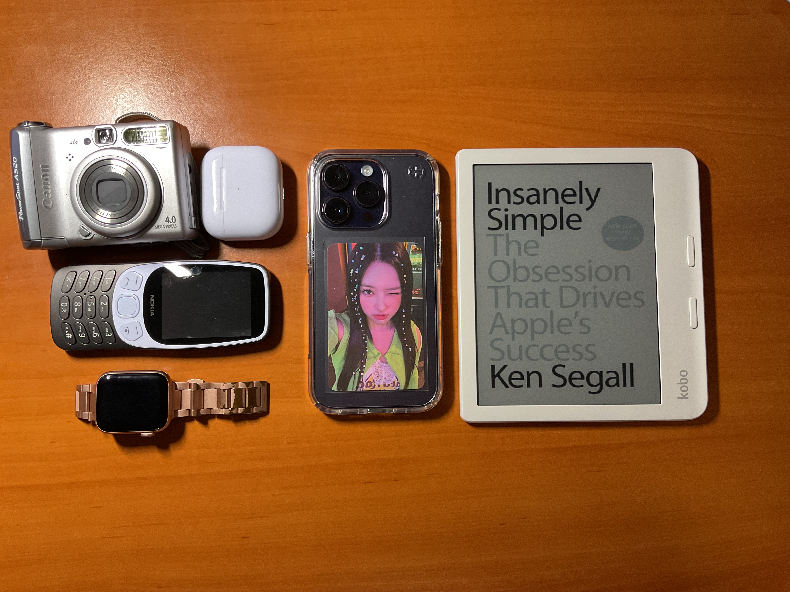

dear diary,
today i realised that my dumbphone did NOT cure my smartphone addiction
acknowledging the problem
I would highly recommend you read through the whole entry before making your opinion.
I was introduced to James Scholz's youtube channel a while ago, and one of the first videos I ever watched was him explaining why he does what he does: studying for 12 hours a day.
In this video, he recommended a book called 'Digital Minimalism' by Cal Newport.
At that point, I kinda already knew what I was going to read about; how our phones are sucking us into an state of mindlessness. right? almost!
I took this book with me when my family took a day trip to the beach, and left my phone at home. This day started my digital minimalism journey.
This was my first self-help book too, I have since read many and I believe these books aren't made for you to learn anything (at least not in abundance) but instead, they serve as a rather aggressive reminder (or a wake-up call with this book particulary) of just how far we've fallen. I hope this entry wakes you up in the same fashion this book did.
I am writing this diary entry in a cafe, surrounded by families with children who are glued to their ipads like there is no tomorrow. Next to them, I saw the adults doing the exact same thing.
I do get upset when I see this, but I've seen this scene so many times that it's almost normalised even if I'm observing.
Growing up, I was taught that people who didn't have any self-control, no self-goverance were people who drank and smoked the day away. But these days, it's hard to ignore how that's almost everyone around us. We have become the people who scroll our day away.
Quite frankly, we all are going through a behavioural addiction epidemic with our devices. According to PubMed, behavioural addiction is a form of addiction that involves a compulsion to engage in a rewarding non-substance-related behavior – sometimes called a natural reward –
despite any negative consequences to the person's physical, mental, social or financial well-being.
It may seem harsh to call it an addiction because we associate addiction with beverages that burn our livers and sticks of herbs that claw at our lungs, but is it not addiction when we reach for these rectangles of glowing light when we feel bored, sad, agitated, self-conscious or anxious?
Is it not addiction when we open instagram, on the edge of our seat gambling whether anyone has texted us in the past five seconds when we last checked?
Once we ask ourselves these questions, it becomes clear that this behaviour is not normal. We are reaching for our phones as a coping mechanism and numbing our minds with a never-ending stream of content (as in mindless content that we gain no knowledge of) from all these apps. We fall into a state of mindlessness, and this state is the most dangerous.
We have become so used to been pulled along this stream of content that our brains don't know how to be bored anymore. In other words, everytime we consume content, our brains release dopamine. Dopamine is a hormone that is associated with pleasure and reward, but there must be a balance.
And if we consistently consume content and keep producing dopamine, there is an inbalance; too much dopamine. This can affect things such as our attention span and our mental health, and as a student, those two things are some of the most important things to regulate to avoid burnout.
Our brains have now been accustomed to always being dopamine-induced that it's not used to being 'bored' or 'empty'.
This can lead to feeling even more anxious, not being able to focus on the task at hand and constantly feeling overwhelmed.
Newport's book advocates the reader to take smaller actions to make a big impact in their technology use. I am no way saying that technology is bad, I love technology and the way it brings people together. However, we need to use it with absolute intention. I am not going on youtube to waste an hour
watching videos about things that don't benefit me in any way, I'm going to spend the hour watching crochet tutorials so I can start my new hobby. See the difference there? That's the main principle of digital minimalism, it's not hating technology, it's using technology with intention.
Much like a military mission, you go in, do your thing and immediately after, you're out of there. Screen time is used as a metric in this space to measure your addiction. Simply put, the higher your screen time, the more addicted you are. In most cases this is true, but for the exceptions where people
use their phones for work, a higher screen time is valid. My screen time before was an average of three to four hours, with my most used apps being instagram and safari. My screen time now is around 30 minutes a day.
solution 1: the 'dumb' smartphone
I started with dumbing down my iphone using an app called the 'Smile App Launcher'. This is a launcher similar to Unlauncher in Android. I deleted all my social media, games and miscellaneous apps. I knew that this journey wasn't going to be easy but I was committed to making a change. I dug out my kindle voyage (which hadn't seen the light of day for almost 5 years) and used Calibre to download books onto it. I made it my goal (if I got a seat on the train) to read on the way to uni. I also created a list of hobbies I wanted to do incase I found myself doom-scrolling again. And that's just what happened. I still found myself swiping to the right, opening up safari and accessing the website versions of the apps I downloaded. In other words, my brain was still craving those hits of dopamine just as much as the next person. I quickly fell back into old habits, I was constantly feeling anxious and overwhelmed. What I was going through was withdrawal and is normal when you are cutting off something you're brain is so used to receiving on the daily. Despite this, the issue persisted and I struggled a lot with my self-control. My lack of self-control can be blamed but I believe that it's not the sole reason. These technology companies are heavily incentivised to make us spend as much time as possible on these apps, because more of our time and attention means we see and watch more ads, which makes them more money. By putting the whole blame on our self-control ignores the multi-billion dollar industry enabling it in the first place.
I had no option but to legitimally go cold-turkey.
solution 2: the dumbphone
Not long later, I slid down the dumbphone rabbithole (mainly r/dumbphones), a community of people united together by their distaste for what our state of normalcy has become for our technology use. And after thorough research, I bought myself my first ever dumbphone.

nokia 3210 4g (grunge black) playing 'Hocus Pocus' by Loossemble
I used this dumbphone for the majority of two weeks. I took it to uni, work and outings with friends and family. Initially, I still found myself reaching for it any chance I could, but was quickly reminded that the
most stimulating thing this phone could do was play music and the never-ending game of snake (which was not doable due to it's horrendous screen). After around three days, I found myself in a state of peace. Everything about
this phone was intentional. Messaging was so slow that I had to make my messages as concise as possible which in turn, made me really think about what I had to say. I no longer had a library of tens of millions of songs
at my fingertips. Instead, at the beginning of every week, downloaded songs onto this phone from my macbook via cable which I had accumulated over the past few days. I found myself being more content with the music I was listening to.
I found myself getting more engrossed with the content I was studying, asking questions and getting help with questions felt rewarding and reading was my new favourite pasttime.
However, not all of this was sunshine and rainbows. Yes, at this point, my phone usage was very much non-existent. However, I found myself moving my scrolling to my other devices such as my macbook and ipad.
To combat this, I installed leech-block and blocked pretty much all distracting sites but it was pretty easy to bypass and I ended up leaving a lot of these sites unblocked.
This reminded me that this is a LIFESTYLE CHANGE. Just because I switched to a dumbphone didn't suddenly mean I was less addicted, I had to literally retrain my brain to undo all the bad habits it had made on the way.
I can try all the dumbphones in the world and still be as addicted as when I first started. To make this big of a change takes great amounts of self-discipline and resilience, things that can be nurtered
through pushing yourself and not giving up.
solution 3: the de-centralised approach (and my current edc)
After reflecting with my time with the 3210 4g, I thought it was time to revisit my approach with my smartphone. My only intentions with my smartphone was to message and call. That's it.
I wanted to make an edc (stands for everyday carry which usually refers to what people carry around in their pockets and bags, think essentials), that would take up features that I didn't use on my smartphone e.g. camera and music.
By having these single-purpose devices, I found myself reaching for my phone less and less. For music, I am using my nokia 3210 which is convenient because it had a headphone jack and bluetooth capabilities.
For my camera, I am using my trusty Canon Powershot A520 from 2005. The photos have a dreamy look to them and I enjoy taking photos with this almost twenty year old camera more than my phone. My smartphone is still the
iPhone 14 Pro I had before, if I had a choice I would buy a mini phone/se if they still made the mini phones. My ereader of choice used to be the Kindle Voyage from ten years ago, but I have since upgraded
to the Kobo Libra Colour and have absolutely no regrets.

canon powershot a520 (2005), airpods 3, nokia 3210 4g (grunge black), apple watch se 1st gen, iphone 14 pro, kobo libra colour (white)
you don't need a dumbphone to be a digital minimalist
Here are some steps you can take right now with your smartphone to lower your screentime:
1. delete all your apps except for calls and messages
2. turn off all your notifications (only exceptions would be calls and messages from immediate family/roommates, friends not included)
3. turn your phone to greyscale mode. studies have shown that putting your phone in greyscale mode makes your device less enticing to scroll on.
4. experiment with analogue methods of things you would've done on your phone e.g. calendar, todo lists, journalling
reflection
I hope this entry has prompted you to reflect and question yourself about your habits. Always remember resilience over resistence!
,-ellie 21.11.24